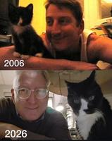
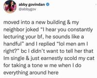

0
0


0
0
A researcher using the name Nightmare Eclipse has released a new Microsoft Defender zero-day exploit called "RoguePlanet," which reportedly works on fully patched Windows 10 and 11 systems and can spawn a command prompt with SYSTEM privileges through a Defender race condition. The release came just hours after Microsoft fixed two previously disclosed flaws during its latest monthly Patch Tuesday drop -- its largest Patch Tuesday release ever. BleepingComputer reports: The researcher shared a proof-of-concept exploit on Tuesday afternoon in a self-hosted Git repository after saying that GitHub and GitLab repositories hosting their exploits had previously been removed by Microsoft. "The exploit is a race condition, so it's a hit or miss. I have managed to get a 100% success rate on some machines while it struggled to work on others," Nightmare Eclipse wrote in the repository.
[...] Cybersecurity firm ThreatLocker told BleepingComputer that they successfully reproduced the flaw in their testing and confirmed the exploit worked against fully patched Windows 11 systems with KB5094126 installed, and shared a video demonstrating it. "Our initial analysis confirms that the RoguePlanet exploit is viable and performs as described. Organizations using application allowlisting can prevent the exploit from executing, providing an effective layer of protection against this attack," Danny Jenkins, CEO of ThreatLocker, told BleepingComputer.
According to Nightmare Eclipse, RoguePlanet was originally developed as a remote code execution vulnerability that exploited Microsoft Defender's handling of files hosted on remote SMB shares. "In initial development, it was confirmed that this vulnerability was a remote code execution," the researcher explained in a blog post. "It required an attacker to coerce a victim to open a .vhd(x) in a remote SMB server, succesful exploitation resulted in defender overwriting its own files and obviously the end outcome was an RCE."
The researcher says another attack scenario could lead to remote code execution simply by coercing a victim into opening an SMB share if symlink evaluation settings were enabled. However, the researcher claims Microsoft silently hardened Defender in mid-May by patching "mpengine!SysIO*" API, which blocked junction attacks. "Rewriting RoguePlanet to make it functional again drained my soul and I couldn't complete the other scenarios and for now it remains unclear if RoguePlanet is limited to LPE or there is some sort of way to turn it into an RCE," the researcher wrote.
Read more of this story at Slashdot.
Visa is integrating its payment network with ChatGPT so AI agents can shop and complete purchases on users' behalf. "It means AI agents can not only recommend products but complete the purchase on the user's behalf, at potentially any merchant that accepts Visa," reports the Associated Press. "The payment network's previous attempts at this technological leap were confined to a single retailer or a small set of enrolled merchants." From the report: OpenAI will provide the technology to allow agents to interact, make decisions and initiate purchases through ChatGPT. Visa, the world's largest payment network outside of China, will provide the payment authorization and fraud monitoring needed to do this at scale. "As AI agents become active participants in the economy, Visa's focus is to ensure transactions are trusted, secure and seamless," said Jack Forestell, chief product and strategy officer at Visa.
Speaking at a company event Wednesday in San Francisco Wednesday, Forestell gave an example of a customer telling ChatGPT they're looking for a pair of wireless headphones under $150. The chatbot would find a pair for sale under those parameters and buy it on behalf of the customer.
Visa and OpenAI did not disclose the financial terms of the collaboration and did not give details on the fees merchants or customers would have to pay. [...] Visa says the feature will have guardrails like spending limits, required approval steps and approved merchants for shopping in order to protect consumers and minimize fraud.
Read more of this story at Slashdot.
Seattle has enacted a one-year moratorium on new datacenters, making it the largest U.S. city to do so as the backlash against AI infrastructure grows across the country. The city council voted unanimously in favor of the ban. The Guardian reports: Lawmakers have framed the pause as an opportunity to draft regulations specifically targeting the electricity-hungry datacenters being built nationwide to serve the AI sector, and to protect local residents from environmental risks and rising electricity bills. According to Seattle mayor Katie Wilson, the moratorium will also let city officials determine whether datacenters are a "good use of urban land," and potentially impose new stipulations on their approval, such as requiring developers to invest in local transit and housing initiatives in exchange for construction permits. "There are times when public pressure forces elected officials to do something they don't want to do, but in other cases, public pressure just supports and helps to spur on elected officials to do things that they already want to do," said Wilson. "I think this was one of those latter cases." [...]
An amendment to the moratorium that passed unanimously last week allows existing datacenters in Seattle to apply for expansions requiring up to 20 megawatts of additional power during the year-long pause. Activists are concerned that the provision may lead to a spike in datacenters' demand for power while the moratorium is in place, and may undermine the premise of the pause. Lawmakers justified the amendment as a way to differentiate between the datacenters that already exist in Seattle and serve a civic purpose, like those powering health facilities and emergency-call systems, from large-scale centers designed to serve the AI sector.
Read more of this story at Slashdot.
The European Commission has ordered Meta to temporarily restore free WhatsApp Business API access for rival AI chatbots while it investigates whether Meta's ban on third-party assistants abuses its dominant position. Meta says it will appeal, calling the move "regulatory overreach" that would let major AI companies use a paid WhatsApp product for free. The BBC reports: The EU said it began its investigation, in December 2025, after Meta banned third-party general-purpose AI assistants from the WhatsApp for Business API. It said that appeared to be an abuse of Meta's dominant position in European markets. So, as an interim measure as its investigation continues, it has given Meta five working days to re-instate access for third-party general-purpose AI assistants to the WhatsApp for Business API under the same terms and conditions that were in place previously.
"In rapidly evolving markets, competition can be lost long before a final decision is adopted," said Teresa Ribera, the Commission's executive vice-president for clean, just and competitive transition. "This is why these interim measures will remain in place for the duration of the investigation." She added the decision "preserved choice for citizens across Europe on the AI assistants they want to use with WhatsApp, without that decision being made for them." The Commission said if Meta failed to comply with its interim decision it could be fined up to 10% up of its total turnover. "The European Commission has decided that OpenAI and some of the largest companies in the world can use the paid-for WhatsApp Business product for free," it said in a statement.
"This is regulatory overreach subsidized by the many European companies that pay. We will appeal."
Read more of this story at Slashdot.
BYD plans to install 3,000 ultra-fast "Flash Chargers" across Europe by the end of 2027, with the first stations already appearing in Germany and the UK. The Verge reports: At an estimated cost of 580,000 euros (about $670,000) per charger according to the Financial Times, that would mean a total spend of roughly $2 billion to install the network. The 1,500kW charging stations are significantly more powerful than Tesla's 500kW V4 Superchargers, though Tesla already has 20,000 chargers installed in Europe. BYD, which has been steadily overtaking Tesla in global sales, says its chargers shouldn't add undue strain to the energy grid, as they'll charge cars from batteries which can be topped up overnight.
Any car with a standard CCS charge port can use the Flash Chargers, though only BYD cars equipped with the company's new Blade Battery can hit the top speeds. Right now there's only one of those in Europe, the 115,000 euros ($133,000) Denza Z9 GT -- it charges to 70 percent in five minutes on the new chargers.
Read more of this story at Slashdot.
The Asahi Linux team is warning Apple Silicon users not to upgrade to the macOS 27 beta because Apple's changes to the boot picker and Startup Disk app make Asahi partitions invisible, preventing Linux from booting. The Register reports: The team added: "If you insist on trying out macOS 27 as soon as possible, please ensure you install a secondary copy of macOS 26 first, or install macOS 27 itself on a secondary volume." They've also updated the installer to prevent installs from running on macOS 27 for now. For anyone who ignored all of the above, "we will not support users who have installed the macOS 27 beta without ensuring at least one stable version of macOS is installed."
Considering macOS 27 is in beta, the issue may be accidental rather than an attempt by Apple to block Linux on its hardware. The Asahi team said it has filed bug report. The good news for anyone who pulled the trigger on installing the macOS 27 beta is that although the partition might not be visible, it hasn't gone anywhere. The Asahi team wrote: "If you have already upgraded to the beta and noticed that your Asahi partition has disappeared, do not stress. Your Asahi partition is still there, and you have not lost any data."
Read more of this story at Slashdot.
A Munich regional court has ruled (PDF) that Google can be held directly liable for false claims in AI Overviews. The case involved AI Overviews falsely linking two publishers to scams and shady business practices, with the court rejecting Google's argument that users could simply check the sources themselves. The Decoder reports: Google's AI overviews work nothing like traditional search results, the court argues. The AI rewrites and judges results "in its own words and according to its own structure," the ruling says. In the case at hand, for example, it opened with confident claims like "Yes, [company] is known for dubious business practices," then built its own structure with a summary, red flags for the alleged scam, and tips for users. The court also found that the AI overview made claims "that are not even made in the search results." None of the linked sources drew any connection between the plaintiffs and the shady companies the AI mentioned. The court called these "the defendant's own statements." Google built the AI, Google offered it to users, so Google owns what it produces, "because it alone has influence over the AI's offering and the algorithms with which the AI operates."
The court also examined existing rulings from Germany's Federal Court of Justice (BGH), which gave traditional search engines and autocomplete limited liability. The BGH had argued that search engine operators were only liable as indirect infringers because they merely made third-party content findable. A proactive duty to check results would threaten how search engines work. The Munich court found that this reasoning doesn't apply to AI overviews. A regular search engine just points to outside websites. But AI overviews generate "independent, new, and substantive statements" by evaluating and combining content from various third-party sites. And only Google can check those statements, the court said, "at least by comparing the underlying third-party websites with its own statements based on them." The court also noted that the AI overview is "by no means absolutely necessary" for using the internet. Traditional search results already help users sort through information, the AI overview is just an extra feature. At the hearing, Google argued that users could check the linked sources themselves to verify if the AI summary was correct. It also said that these users knew "that information generated with AI should not be blindly trusted." The court rejected this.
Read more of this story at Slashdot.
An anonymous reader quotes a report from ComputerWeekly: Microsoft has issued patches for about 200 flaws in its latest monthly Patch Tuesday drop, blasting past a previous record high of almost 170 common vulnerabilities and exposures (CVEs) set in October 2025. Among a great many others, the latest update from Redmond fixes a total of 32 critical CVEs and three zero-day flaws. Dustin Childs, head of threat awareness at TrendAI's Zero Day Initiative, said: "We are heading into a high-stakes summer for cyber security. June's record-shattering drop ... is a stark warning that AI is supercharging flaw discovery at an uncontrollable scale. The current number of CVEs shipped by Microsoft this year exceeds the total number of CVEs shipped in all of 2018. It is extraordinary that Microsoft can produce so many patches in a single month, and I expect many testers are wondering what quality issues may exist."
And with the addition of hundreds of CVEs in Google Chrome and Microsoft Edge (Chromium) and other third-party flaws taking the total to almost 600, Chris Goettl, vice president of security product management at Ivanti, said talk of a 'Patch Apocalypse' was no longer unwarranted. "We are in the Patch Apocalypse. The Patch Apocalypse is now," said Goettl. "This is not intended to be a scare tactic. It is meant to outline the challenge that many organizations were anticipating, but the new generation of LLMs [Large Language Models] has accelerated significantly in the first half of 2026."
"There are going to be more CVEs resolved by vendors at a faster and more continuous pace than we have ever seen previously. Unfortunately, this will also include more zero-day and n-day exploits than previously seen as well. The window from release from a vendor to exploitation had already shortened to five days as of 2023 threat intelligence data." Goettl said that many suppliers have acknowledged the need to use AI tools in their security research to identify and resolve flaws, with Oracle, Google Chrome and Mozilla all upping the cadence of their updates. Whether or not Microsoft follows suit remains to be seen.
Read more of this story at Slashdot.
Commonwealth Fusion has published five peer-reviewed papers laying out the physics case for ARC, its planned 400 MW fusion power plant, which would follow the company's smaller SPARC tokamak now under construction. The papers suggest ARC could produce more energy than it consumes using high-temperature superconducting magnets, molten-salt heat extraction, and 15-minute fusion pulses. Ars Technica reports: ARC will be a tokamak that hosts fusion between hydrogen's two heavier isotopes, deuterium and tritium. This reaction results in a helium nucleus and releases a neutron and radiation. The helium transfers heat to the plasma, maintaining the conditions needed for fusion, but it is otherwise a waste product, referred to as "ash" in the fusion context. The neutron and radiation, however, are put to use. Part of that use is simply imparting energy into a blanket of molten salt that surrounds the fusion chamber. That energy, in the form of heat, will be used to drive a turbine that produces the electricity. The molten salt includes lithium ions; when one lithium isotope absorbs a neutron, it decays into more helium, plus tritium that can be used as fuel for the reactor. There are isotopes present that will also release additional neutrons, allowing this process to generate sufficient fuel.
Overall, the present design of ARC is expected to produce about 1.13 GW of fusion power, with 500 MW of that extracted as electricity. Some of that (100 MW) will be needed to power the plant's operations, leaving 400 MW to be sent to the grid. The rest of the energy is either kept in the tokamak to maintain the fusion reactions or lost due to inefficiencies in the heat and energy transfer of the system. There's a lot of uncertainty about these numbers; the 1.13 GW is just the center of a range of potential values running from 900 MW to 1.3 GW, so the 400 MW output may need to be adjusted up or down accordingly.
Some of that 400 MW comes during periods where fusion is not occurring. The nuclear reactions will occur within 15-minute-long periods that will be interspersed with one minute resets. The resets are meant to be kept short enough that nothing has much of a chance to cool down before it gets heated up again -- thermal inertia will let it continue generating power. That will be one of the key differentiators with SPARC, which doesn't have the heat extraction needed to maintain stable fusion for these long time periods, and so can't maintain the near constant temperatures needed for reliable power generation.
It's inevitable that parts of the device will be exposed to radiation and perhaps fusion plasma. The inner walls of the reactor will be shielded by tungsten, which will limit erosion by the conditions. Meanwhile, the vacuum vessel is designed to be replaced every one to two years. The papers note that this flexibility will allow them to make some design changes even after ARC is built. To enable this, the whole tokamak is meant to split in half for maintenance.
Read more of this story at Slashdot.
NASA has named Randy Bresnik, Luca Parmitano, Frank Rubio, and Andre Douglas as the crew for Artemis III, which has been reworked from a moon-landing mission into a roughly two-week Earth-orbit test of lunar landers being built by SpaceX and Blue Origin. NBC News reports: Randy Bresnik, Luca Parmitano, Frank Rubio and Andre Douglas are expected to launch into Earth orbit next year, with the goal of testing two commercially developed lunar landers that are slated to carry astronauts to the surface of the moon during the Artemis IV mission in 2028. Bresnik will be the mission's commander, with Parmitano, an Italian astronaut with the European Space Agency, serving as the pilot. Douglas and Rubio will be mission specialists, and Bob Hines will train with the crew as a backup member. "This test flight will enable us to prove we can carry out highly choreographed operations with our partners across hardware interfaces, software propulsion systems and life support elements with crew in the high-stakes space environment," Jeremy Parsons, NASA's Artemis program manager, said during NASA's announcement on Tuesday.
Bresnik has been to the International Space Station twice, most recently as commander of an expedition in 2017. A retired U.S. Marine colonel, he was selected as a NASA astronaut in 2004. Bresnik has helped oversee development and testing of spacecraft for the Artemis program as an assistant to the chief of the Astronaut Office, which manages astronaut training and operations. Parmitano has also done two stints on the ISS and served as commander of an expedition in 2019. He has completed a total of six spacewalks and also performed the first live DJ set in orbit. Before becoming an astronaut, Parmitano was a test pilot for the Italian air force.
For Rubio, a physician with 28 years of service in the Army, Artemis III will be his second trip to space. From 2022 to 2023, he spent 371 days on the space station, breaking the record for longest-duration spaceflight by an American, according to NASA. Douglas is the only crew member making his spaceflight debut. An engineer who previously worked on space exploration and robotics at Johns Hopkins University Applied Physics Lab, he became a NASA astronaut in 2022. Douglas was the backup crew member for the Artemis II mission around the moon earlier this year. He told NBC News in an interview after Tuesday's announcement that the role had at times been a challenge. "It was hard to figure out how do you balance getting ready to go, not go, all that stuff," he said. "But to go now is just fantastic."
Read more of this story at Slashdot.
An anonymous reader quotes a report from 404 Media: The Federal Communications Commission (FCC) wants to make it effectively impossible for people to buy what many call burner phones -- a phone not explicitly linked to your identity at the point of purchase -- which would impact privacy-conscious people, to domestic abuse survivors, to journalists, and many more. The FCC plans to do this by legally forcing the country's telecoms to store a wealth of personal information about essentially all phone customers, including a government issued identification number and their physical address, alarming privacy advocates and civil rights activists who compare the measures to those from authoritarian countries where it can be difficult to buy a mobile phone plan without giving up your identity.
The proposed change would drastically shake up how people obtain phone plans in the U.S., and have all sorts of privacy and cybersecurity knock-on effects. The FCC is proposing the data collection partly as a way to combat scammers, with telecoms being required to collect other information on business and foreign customers like the intended use case of their bulk phone plan purchase and their IP address. But the changes would mean telecoms collect data on all new and renewing customers, and the FCC provides a long list of other things that the collected data could help authorities with.
In a synopsis of the proposed changes, the FCC writes, "Specifically, we seek comment on requiring originating providers to, at a minimum, obtain and retain the name, physical address, government issued identification number, and an alternate telephone number of any new and renewing customer before granting access to its services." The goal of collecting this data, the FCC writes, is to deter some scammers from getting onto a telecom network in the first place, and so "enforcers will be better able to identify the scammers when they do." The FCC compares the changes to the sort of data collected by banks to prevent money laundering.
One section stresses that the newly collected data would help "law enforcement to more easily identify callers that use the network to perpetuate crimes by ensuring that voice providers have accurate and complete customer information." It goes on to ask if the data would help identify people buying and selling illicit goods; the investigation of "fraud, espionage, or influence operations that undermine national security", and "address abuse in text messaging networks." "Criminals continue to leverage the anonymity provided by phone calls and texts to defraud Americans and exploit communications networks to further other crimes," one section reads. "For decades, civil libertarians have looked overseas at authoritarian countries where the government requires people to register to get a mobile phone to ensure they can be tracked. We never thought that would happen here," Jay Stanley, senior policy analyst at the American Civil Liberties Union's (ACLU) Speech, Privacy, and Technology Project told 404 Media in an email. "But make no mistake: with this rulemaking, the government is contemplating taking away people's ability to get a burner phone, which will hurt low-income people, domestic violence victims, and anyone else who cares about their privacy."
Read more of this story at Slashdot.
The Pentagon has added Alibaba, BYD, Baidu, Unitree, and other Chinese companies to its list of firms it says support China's military, barring them from U.S. defense contracts. The companies and China's embassy deny the allegations. The Associated Press reports: Created in 2021 by a congressional mandate, the list (PDF) seeks to identify Chinese companies that the Pentagon considers to have links to the Chinese military -- not only those directly controlled by the Chinese military and security forces but also those contributing to the country's defense industrial base. When updating the list last year, the Pentagon said the Chinese military sought to acquire advanced technologies and expertise developed by Chinese companies, universities and research programs that "appear to be civilian entities."
The Chinese Embassy on Monday accused the U.S. of "overstretching the concept of national security and making discriminatory lists to go after Chinese companies." It said Chinese companies observe the laws and regulations of the countries where they do business. "The U.S. should stop its wrong practice and create a fair, just and non-discriminatory environment for Chinese companies," the embassy said in a statement. [...] The Chinese Embassy on Monday accused the U.S. of "overstretching the concept of national security and making discriminatory lists to go after Chinese companies." It said Chinese companies observe the laws and regulations of the countries where they do business. "The U.S. should stop its wrong practice and create a fair, just and non-discriminatory environment for Chinese companies," the embassy said in a statement.
Read more of this story at Slashdot.
Anthropic is releasing Claude Fable 5, a Mythos-class AI model for enterprise customers and paid subscribers. The company says broader access is possible thanks to new safeguards that block high-risk requests in areas like cybersecurity and biology. "For us, it's really around what we call 'race to the top,' being able to provide this technology in a valuable fashion, and at the same time providing the right safety guardrails so that it can do asymmetrically more benefits than harm," Dianne Penn, Anthropic's head of product management for research, told CNBC in an interview. CNBC reports: [W]ith the launch of Claude Fable 5, Anthropic is honoring its stated "eventual goal" to deploy Mythos-class models at scale. It's also capitalizing on growing momentum and investor interest in its technology ahead of a potentially massive IPO, which is expected to take place as soon as this year. Anthropic said Claude Fable 5 shows "exceptional performance" across software engineering and knowledge work tasks. On some benchmarks, it scored more than 10% higher than Claude Opus 4.8, another model the company announced late last month, according to a blog post.
Claude Fable 5 represents a "significant jump" in capability, which is why Anthropic had to implement additional guardrails to prevent misuse, Penn said. If a user asks a high-risk question, like how to make ricin, a toxin, for instance, the model will block its response and fall back to Claude Opus 4.8 to deliver a safe answer. "What we wanted to do was to be very intentional about building new types of classifiers and new types of safety guardrails in place for this launch," Penn said. Anthropic also released an updated Mythos model called Claude Mythos 5. "It's the same underlying model as Claude Fable 5, but with the safeguards lifted in some areas," reports CNBC.
Read more of this story at Slashdot.
Valve is discontinuing physical Steam Gift Cards and says it will stop restocking them as retailers sell through remaining inventory. In a blog post, the company blamed persistent gift card scams as the reason, though Steam Digital Gift Cards will remain available and existing physical cards can still be redeemed. PC Guide reports: Valve says it has "responded to gift card scams over the years" -- but this doesn't stop scammers from adapting. The Steam creator has actively worked with retailers and law enforcement, among other precautions, to counteract scams, but says the issue can never be fully resolved. Steam Digital Gift Cards will continue to operate as normal.
Read more of this story at Slashdot.
An anonymous reader quotes a report from Wired: Last year, Meta radically overhauled the rules around what content it would allow on its platforms. The company claimed that its own efforts policing speech had gone too far and that it would relax the rules around what speech was allowed. "We have been over-enforcing our rules, limiting legitimate political debate and censoring too much trivial content and subjecting too many people to frustrating enforcement actions," Joel Kaplan, Meta's chief global affairs officer, wrote in a blog post at the time. Over a year later, new research from the Center for Countering Digital Hate (CCDH) shows the immediate impact of these changes.
The researchers analyzed about 8 million Facebook comments and found that abusive and racist comments targeting both Republican and Democrat lawmakers tripled in the six months after the new rules were put in place. Some categories of abusive comments documented by the researchers saw even sharper rises, with violent threats and hate speech quadrupling during the same period. The report cites specific examples of gendered and racist abuse directed at lawmakers like US representatives Jasmine Crockette of Texas and Byron Daniels of Florida. These comments were not taken down by Meta.
The CCDH researchers also found that threats against President Trump more than doubled in the six months after Meta overhauled its rules. Many of the comments, which included direct threats to his life, could have been classified as felony offenses, the researchers say. [...] Comments that violated Meta's policies around violent threats quadrupled, from 1,800 in the six months before the changes to 7,600 in the six months after. Hate speech comments also quadrupled, from 6,900 to 30,000. Comments that broke Meta's rules on bullying and harassment doubled, from 15,700 to 39,900.
Read more of this story at Slashdot.
Abner Li / 9to5Google : YouTube rolls out a new in-app messaging system for sharing videos and having 1:1 conversations; it discontinued its previous Messages feature in 2019 — After testing got underway last year, YouTube is now more widely rolling out a new in-app messaging system.
Bloomberg : Amazon secures a $17.5B loan from Citigroup and other banks, after selling CA$14B in bonds on Monday, the largest corporate debt offering in Canadian dollars — Soon after selling the biggest Canadian corporate bond sale on record, Amazon.com Inc. inked another multi-billion dollar financing …
Raphael Satter / Reuters : CISA shortens the deadline for US agencies to fix the most critical vulnerabilities in their networks to three days, citing hackers' use of AI — The U.S. cyber defense agency said on Wednesday that government officials now have three days to deal with the most serious categories …
Laurie Chen / Reuters : Chinese companies are implementing “quiet” AI-driven layoffs to avoid labor laws that require government approval for job cuts exceeding 10% of a workforce — Liu, a Hangzhou-based contractor at a large Chinese internet firm, says her employer began quietly firing contractors …
Jason Schreier / Bloomberg : Sources: Microsoft's Xbox division is planning major layoffs next month and significant budget cuts for marketing and some other areas — Asha Sharma's first major cuts will arrive in July — Microsoft Corp.'s Xbox division is planning major job cuts next month as new Chief Executive …
Bloomberg : Sources: Sea's Shopee is cutting hundreds of developer jobs globally; the reductions started this week and amount to about 8% of Shopee's developer workforce — Sea Ltd.'s Shopee is cutting hundreds of developer jobs globally, joining rivals across the world in slashing staff while they adopt AI …
Sam Sabin / Axios : OpenAI says it has banned China-linked accounts that used ChatGPT to draft social media influence campaigns targeting US debates over tariffs and data centers — OpenAI has banned China-linked accounts that used ChatGPT to draft social media influence campaigns targeting U.S. debates …
Juby Babu / Reuters : Oracle reports Q4 revenue up 21% YoY to $19.18B, vs. $19.1B est., and expects to raise ~$40B through a combination of debt and equity financing in FY 2027 — Oracle (ORCL.N) reported fourth-quarter revenue that narrowly beat Wall Street expectations on Wednesday, amid growing concerns …
Anthropic : Anthropic releases two policy proposals on how governments should address catastrophic risks and manage labor market disruption from advanced AI systems — AI is advancing at exponential speed, and the policymaking process was built for a slower world. — We are sharing two policy proposals to prepare for AI progress.
Dario Amodei / @darioamodei : Dario Amodei says frontier models should face mandatory third-party testing for cyber, bio, and autonomy risks, in addition to overall transparency requirements — In addition to transparency, I now believe frontier models should face mandatory third-party testing for cyber, bio, and autonomy risks—with the power to block or revoke deployment of models that pose catastrophic risk.
Dario Amodei : An essay on policy responses to AI's exponential progress across regulation and public safety, macroeconomics and taxes, science, civil liberties, geopolitics — In one of the side plots to The Lord of the Rings, two of the Hobbits attempt to rouse Treebeard—a wise but ponderous sentient tree …
Paige Smith / Bloomberg : OpenAI and Visa partner to let AI agents make purchases online after users give their permission and to explore enterprise applications for AI-driven payments — OpenAI and Visa Inc. are now allowing artificial-intelligence agents to make purchases online after users give their permission …
Lorenzo Franceschi-Bicchierai / TechCrunch : Cybersecurity researchers complain that Claude Fable's guardrails are too strict, rejecting “innocuous tasks” like reading blog posts or performing code reviews — Anthropic released its latest model Fable on Tuesday, billing it as a public and limited version of its powerful and much-hyped cybersecurity model Mythos.
Tom Warren / The Verge : Sources: Microsoft is restricting employees from using Claude Fable 5 because of Anthropic's new 30-day data retention requirements — Microsoft's legal teams are evaluating Anthropic's new data retention changes. … Anthropic released Claude Fable, its first Mythos-class AI model …
Sarah Guo : As AI commoditizes benchmarkable work, an organization's lasting moats lie in tasks that are verifiable through its private data and judgment — The mid-2026 investor's version of AI psychosis is a despair that nothing is investable, that we should put all our money into Anthropic and Nvidia and go home.